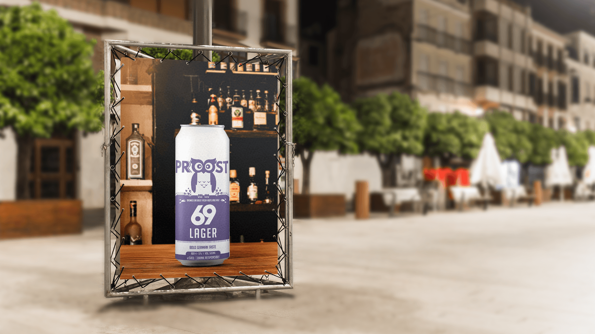
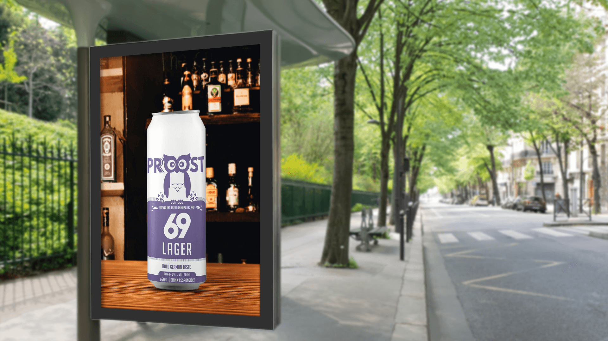

The unusual name, owl mark and number needed to resolve as one memorable identity rather than competing details.
← Back to workOne can forward.
Proost69 · Lager Print
One can forward.
A whole night behind it.

Project overview
A homegrown lager.
Framed for easy recognition.
Proost is a homegrown beer brand built around an accessible, easy-drinking interpretation of premium quality.
The print direction gives the tall white-and-purple can uninterrupted attention, placing it in the bar environment where the brand naturally belongs while keeping the owl identity, “69” and lager designation immediately visible.
- Product
- Proost69 Lager
- Format
- Tall Can
- Expression
- Bold + Sociable
- Application
- Print + Outdoor
The communication challenge
Look premium.
Never feel out of reach.
The creative had to carry a night-out mood while keeping the product—and responsible-drinking message—clear.
The creative idea
The bar becomes mood.
The can becomes memory.
Amber light, dark shelves and polished wood establish the occasion without adding characters or narrative clutter.
The can stays crisp against the soft background, letting its vertical silhouette and purple identity block do the work of headline, logo and product shot at once.
The visual hierarchy
Owl. Number.
Lager.
- 01
The owl
The distinctive eyes turn the brand name into an ownable visual signature.
- 02
The 69
The oversized number gives the pack a fast recognition code from a distance.
- 03
The category
Clear lager naming grounds personality in an immediately understood product.
The original work in context
One pack.
Two street moments.
The supplied outdoor applications remain uncropped so the complete can, pack hierarchy and bar atmosphere stay visible.


The outcome
A can with character.
A scene that knows its role.
The final system makes Proost69 recognisable before the smaller details are read: one confident silhouette, one distinctive code and one warm social context.
Pack recognition
The can remains the undisputed visual hero.
Occasion built in
The bar environment creates atmosphere without distraction.
Responsive flexibility
The original artwork stays complete across screen sizes.
The night sets the mood.The can signs its name.
Need a product people recognise at first glance?